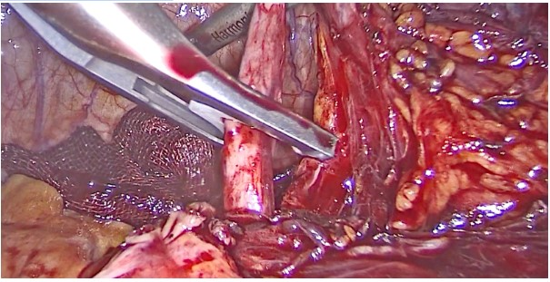

¡ATENCIÓN! La presión arterial es un problema de por vida, pero este producto de
tu cocina te salvará la vida, devolverá
la salud y la juventud como hace 20 años… ️
Para bajar la presión a 120/80 y recuperar el 100% de la salud no necesitas tomar pastillas, hacer
dietas, dejar la sal
ni cambiar tu estilo de vida. Porque todos esos métodos solo tratan los síntomas, no la raíz de la
enfermedad. Imagina
que tienes un techo con goteras en casa, el agua cae del techo y en vez de tapar el agujero arriba, solo
pones un balde
para recoger el agua. Eso mismo hacen las pastillas, dietas y todos los métodos habituales para
controlar la presión.
Parece que ayudan, pero en algún momento el techo se romperá aún más y inundará toda la casa.
Pero te voy a dar un método con el que ya mañana normalizarás la presión a los ideales 120/80, estarás
completamente
sano y te sentirás 20 años más joven. Lo llamé “losartán casero”. Porque tras nuestras investigaciones
conjuntas con la
UNAM, resultó ser 17 veces más efectivo y 12 veces más barato que los medicamentos químicos de farmacia.
Con este método mañana podrás:
- Normalizar tu presión arterial de una vez por todas y olvidarte de ella
- Sentirte 20 años más joven, con salud como a los 25
- Llevar un estilo de vida activo y saludable sin restricciones en alimentación y actividades
- Olvidar las consecuencias de la hipertensión — esto ya no te afectará nunca más
- Dedicar tiempo de calidad a tu familia y amigos
- No gastar cientos de miles en medicamentos ineficaces para la presión, que solo te empeoran
Según estudios de la UNAM, se demostró que la verdadera causa de la presión alta no es el estrés, ni
fumar, ni la edad,
ni la genética. La principal y oculta causa es el mal funcionamiento del riñón derecho. El mal
funcionamiento del riñón
afecta el funcionamiento de tus vasos sanguíneos y mientras más obstruido esté el riñón, más alta
será tu presión
arterial.

Llevo más de 20 años estudiando enfermedades cardiovasculares y sus particularidades, y he realizado
más de 1000
experimentos con distintos remedios y métodos hasta encontrar la respuesta que esperan todos mis
pacientes.
He invertido 20 años en pruebas y estudios para que tú puedas obtener la respuesta que te devolverá
el 100% de salud,
una segunda juventud y presión estable a 120/80 en solo 30 segundos, así que escúchame hasta el
final.
Lamentablemente, nuestro cuerpo no puede limpiar naturalmente el riñón obstruido, lo que endurece las
paredes de las
arterias principales, aumentando la resistencia al flujo sanguíneo, y por eso sube la presión.
La buena noticia es que un colega mío de la UNAM me contó un ritual casero sencillo que puede restaurar
el
funcionamiento correcto del riñón y revertir todas las enfermedades cardiovasculares en los primeros 3
días. Este
poderoso método casero ablanda las paredes arteriales y normaliza el flujo sanguíneo de forma natural.
Sin necesidad de
medicamentos o dietas restrictivas, muchas personas usan esta solución para normalizar la presión de los
vasos
sanguíneos naturalmente, estar completamente sanos y sentirse 20 años más jóvenes.
Solo una porción de sal con canela, y la combinación de sus propiedades en el uso correcto contiene
más sustancias
naturales que todos los medicamentos juntos.
Más de 37,000 mexicanos lograron revertir el envejecimiento y comenzaron a vivir plenamente en solo
10 días. Solo
necesitas hacer esto una vez antes de dormir hoy.
Y mañana este ritual de 30 segundos te ayudará a nunca enfrentar consecuencias como:
- Ataque al corazón
- Infarto
- Derrame cerebral
- Mareos y dolores de cabeza
- Reducción de la esperanza de vida en 20 años
- Pérdida del riñón
Gracias a cada experiencia fallida, después de más de 10 años y 10 millones de pesos invertidos en
pruebas, encontré la
única solución para tu envejecimiento y presión alta. Y especialmente para ti preparé un video
gratuito de tres minutos,
donde explicaré de forma simple y breve mi método y cómo usarlo correctamente.
Ahora mismo puedes ver este video totalmente gratis, antes de que la corrupción me obligue a
convertirlo en un elixir
costoso.
El acceso gratuito al video a través del botón abajo se limitará en 15 minutos.
Haz clic en el botón para obtener más información aquí abajo, para ver la
presentación en video que muestra cómo usar
este simple ritual de 30 segundos y aplicar este secreto de salud y juventud.
POR ESO USTED NUNCA PODRÁ ESTABILIZAR
LA PRESIÓN A 120/80 SIN ESTE INGREDIENTE EFECTIVO EN MENOS DE 3 SEMANAS
El video ya ha comenzado
¡Haga clic para escuchar!
(Asegúrate de tener el sonido activado. Este video puede tardar 10 segundos en cargarse.)
¡Apresúrate, la oferta es limitada!
COMO SE PRESENTA EN
Сomentarios:
Elena Martínez
¡Vaya, ni siquiera pensaba que la presión alta pudiera estar relacionada con arterias obstruidas! Muy
interesante y
útil, gracias por la explicación. Voy a prestar más atención a mi salud.
Este video realmente me hizo reflexionar. Es hora de cambiar el enfoque hacia mi salud, no solo tomar
pastillas. ¡La
información sobre la limpieza de arterias de forma natural me sorprendió!
¡Estoy de acuerdo con cada palabra! La industria farmacéutica solo se lucra de nosotros, mientras nuestra
salud sigue
empeorando. Espero que este método realmente funcione.
¡Un video muy informativo! Llevo mucho tiempo sufriendo de presión alta y tomando medicamentos que solo ayudan
temporalmente. Creo que vale la pena probar este método de limpieza de arterias.
¡Esto es un descubrimiento! Siempre pensé que los medicamentos eran el único camino, pero resulta que se puede
abordar
de manera natural. ¡Información muy útil!
No podía entender por qué los medicamentos no me ayudaban con la presión. Este video finalmente me dio la
respuesta.
Definitivamente voy a probar el método que mencionan.
¡Estoy muy agradecido por este video! Nunca pensé que los métodos naturales pudieran ser tan efectivos. Es
hora de
replantear mi enfoque hacia el tratamiento.
Este video debería mostrarse a todas las personas que luchan contra la presión alta. Empecé a seguir las
recomendaciones, y en una semana ya noté mejoras.
Estoy cansada de las visitas constantes al médico y las pastillas. Gracias por este video, me dio esperanza de
mejorar
sin depender constantemente de medicamentos.
¡Definitivamente este video debería compartirse con amigos! A muchos de ellos les recetan medicamentos que no
les hacen
ningún efecto. Tal vez esto les ayude.
Ex. American Heart Association. (2021). Hypertension: Causes, Symptoms, and Treatments. Retrieved from
www.heart.org
Ex. Grundy, S. M. (2002). Atherosclerosis: Pathogenesis and implications for therapy. New England Journal of
Medicine,
346(16), 1172-1180.
Ex. Williams, B., et al. (2018). Pharmacological management of hypertension. BMJ, 361, k1903.
Ex. Hooper, L., et al. (2012). Reduced dietary salt for the prevention of cardiovascular disease. Cochrane
Database of
Systematic Reviews, (12).
Ex. World Health Organization. (2015). Cardiovascular diseases (CVDs). Fact sheet.
Ex. Harvard Health Publishing. (2017). Lower your cholesterol naturally.
Ex. Davidson, M. H., et al. (2006). Efficacy of plant sterols and stanols in the management of
hypercholesterolemia.
Journal of Clinical Lipidology, 10(3), 341-349.


Elena Martínez
Isaac Santos
María Vázquez
Carlos Méndez
Lucía López
Antonio Pérez
Sofía Gutiérrez
Ramona Cárdenas
Alejandro Rodríguez
Guadalupe Flores
Rafael Gutiérrez
Leticia Morales
Felipe García
Isabel Ramírez
Miguel Delgado
Rosa Mendoza
Fernanda Jiménez
Sergio Ramos